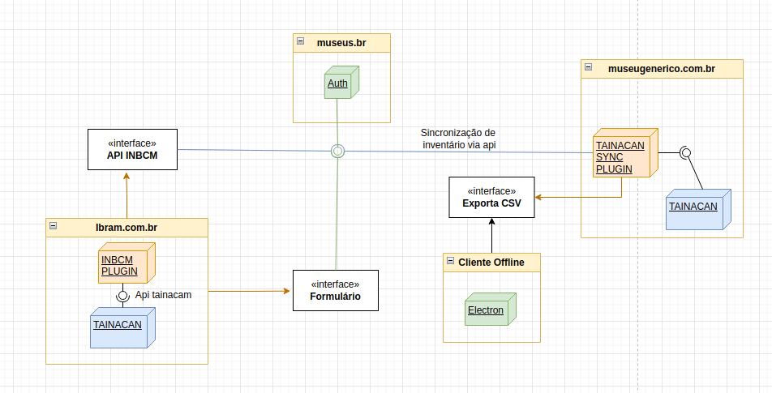

INBCM
Inventário Nacional de Bens Culturais Musealizados
Bem vindo à documentação técnica do INBCM, este repositório visa concentrar e padronizar todos os documentos de desenvolvimento do ecossistema INBCM.
Antes de começar
Este site contém a documentação e especificação técnica dos sistemas, voltado para os desenvolvedores INCBM, utilizará referências em linguagem de programação e referências UML, os termos e nomenclaturas museológicos poderão ser substituídos por termos técnicos voltados para programadores de forma que a tradução destes elementos se torne mais fácil para as equipes de desenvolvimento.
O que é o INCBM?
A Resolução Normativa Ibram nº 6, de 31 de agosto de 2021, normatiza o Inventário Nacional dos Bens Culturais Musealizados (INBCM) em concordância com o Decreto nº 8.124, de 17 de outubro de 2013. O INBCM é um instrumento para inserção periódica de dados sobre os bens culturais musealizados em acervos museológico, bibliográfico e arquivístico dos museus brasileiros. A Resolução estabelece elementos de descrição para identificação desses bens, abrangendo categorias como museológicos, bibliográficos e arquivísticos. Além disso, define etapas para implementação do INBCM, como a definição de elementos de descrição, publicação de recomendações técnicas e orientações para envio e consulta das informações. A Resolução revoga normativas anteriores e entrou em vigor em 1º de outubro de 2021.
Mais informações na Resolução Normativa Ibram nº 6.
Visão geral do ecossistema
O ecossistema do INCBM é composto de múltiplas aplicações que trabalham em conjunto, a interação desses sistemas visa oferecer aos museus uma forma de enviar os inventários para o cadastro nacional de forma organizada e fácilmente compreensível pelo usuário final por diferentes canais.

Acima: Visualiação da implantação do INCBM
Os elementos neste diagrama exemplificam a implementação do ecossistema contendo:
Plugin INCBM- Plugin responsável pelo recebimento e tratamento dos inventários.Plugin Tainacan Sync- Plugin responsável pela exportação e/ou sincronização de dados entre as instalações do tainacam com o inventário nacional.Cliente Offline- Um sistema standalone que permite a criação do arquivo de inventário sem necessidade de conexão com a internet ou instalação local do tainacam.
Os componentes
Plugin INCBM
O plugin INCBM é o grande centralizador de dados, projetado para recepcionar e validar os arquivos de invetário dos museus, funciona como uma extensão do Tainacam consumindo suas apis (hooks, api interna e api json) o INCBM adicionará novas funcionalidades.
Plugin Tainacam Sync
Este plugin, também uma extensão para o Tainacam, será utilizado por usuários de museus que já tem o tainacam instalado para fornecer um guia e interface de exportação de dados direto no painel wordpress.
Cliente Offline
O cliente offline é uma aplicação Electron utilizada para criar o arquivo de inventário para os museus que não utilizam o tainacam e/ou não possuem qualidade ou disponibilidade de conexão com o inventário. Esta aplicação fornece formulários para a criação do inventários, gestão dos itens do inventário e exportação do arquivo de inventário para envio através de um formulário.